认识与感受 Rust 的红与黑
写在前面
你如今的气质里，藏着你走过的路、读过的书、爱过的人，以及学习过的编程语言 😄
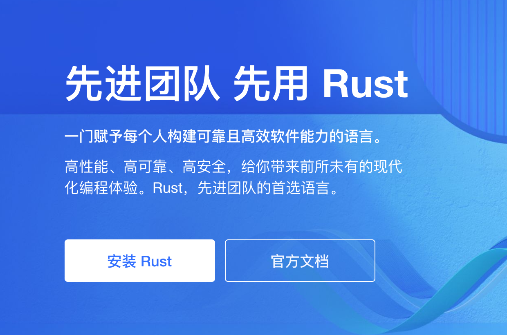
😝 趣图镇楼～ by @Folyd
题外话：欢迎一起交流&加入我们团队 😎
希望能解答的问题
- 前期调研：感受 Rust 是一门什么样的编程语言
- Rust 目前的发展状况
- 是否真的有必要了解或学习
- （学不动了 🌫️
不太能解答的问题
- 掌握甚至入门 Rust
- 若有意进一步学习，可跳转文档底部[参考]
- 若有任何问题，可随时评论交流
Takeaway
一门赋予每个人构建可靠且高效软件能力的语言。—— Rust 程序设计语言
- Rust 十分重视与强调开发者用户体验，拥有友好的编译器和清晰明确的错误提示与完整的文档
- Rust 采用强大的类型系统+所有权机制，兼具优异的性能、安全与丰富的语言抽象表现力
- Rust 是一门系统级的通用编程语言，应用领域广泛：嵌入式、操作系统，区块链、数据处理到网络应用、UI 编程、游戏等
- 个人体会：
- Rust 像一个始终在线且严格的优秀导师，引导我写出更可靠而高效的代码
- 掌握了 Swift 学习 Rust，迁移起来非常自然，且有助于更深入理解 Swift
- C/C++ 的性能 + Swift 的安全保障与表现力
🚦Rust 的负面因素
- 对于链表这样存在环的数据结构，实现起来非常费劲（链接参考）
- 编译时间相比其他绝大多数语言要慢，编译器检查和全局性优化
- 编译器过于严格，甚至是啰嗦，虽然错误提示非常友好，但仍需要花时间适应
- 整个语言体系非常复杂，除了极为丰富的类型系统，还引入了诸多新语言特性和概念
- 循循渐进地了解
- 目前来看，社区整体还较新的同时，Rust 狂热爱好者会显得过于追捧和激进（重构一切主义🙅♂️）
- 因地制宜，权衡取舍，润物细无声
准备工具集
- Rust (采用 Rustup 安装)
- 推荐: RsProxy 镜像 By Bytedance.
- VSCode + rust-analyzer [+ crates]
- Rust Search Extension（可选&强烈推荐）
Rust 初体验
采用 Rust Playground 快速体验
fn hello(name: Option<&str>) {
match name {
Some(name) => println!("Hello, {}!", name),
None => println!("Hello, World!"),
}
}
fn main() {
hello(None);
hello(Some("Binlogo"));
}
-
类型系统强大，无
null和void *等类型 -
Option类型用于表达空，编译时检查，避免运行时错误 -
翻转字符串
fn reverse(input: &str) -> String {
input.chars().filter(|c| !c.is_whitespace()).rev().collect()
}
fn main() {
let s = "a1 b2 cdefg";
println!("{}", reverse(&s));
}
- 代码抽象程度高，表达力强
- 高阶函数支持
- 实现以上两点的同时，没有运行时消耗（零成本抽象）
Rust 的目标与设计理念
-
实用的系统级编程语言
-
同时追求安全、并发、高性能
-
显式高于隐式
-
运行时行为可预测
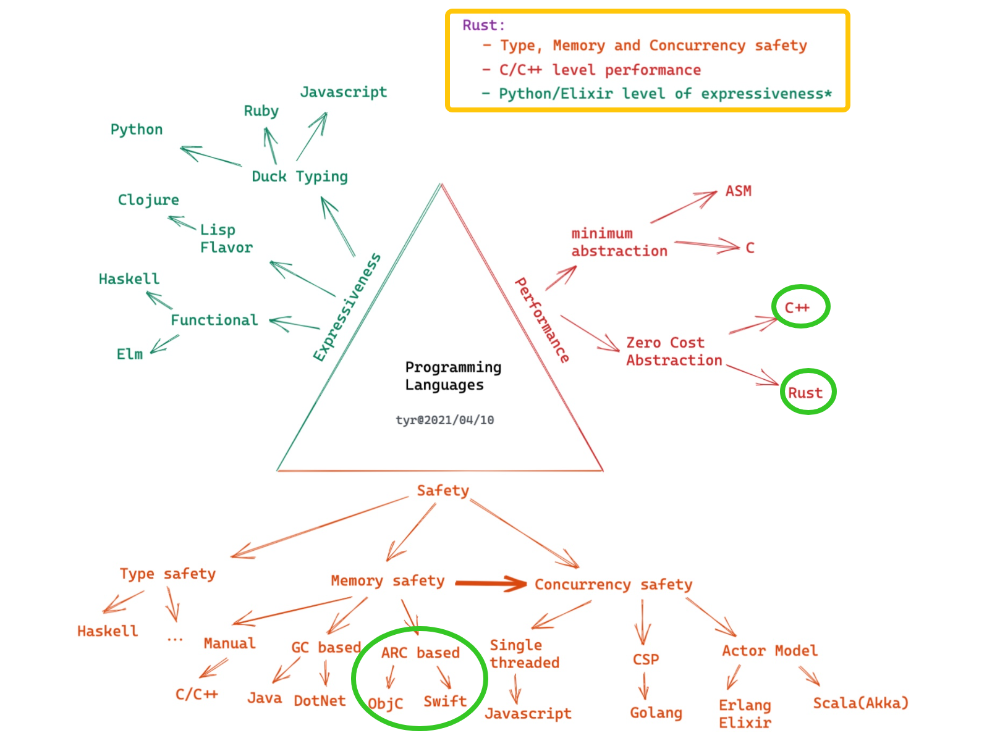
图源：https://tyrchen.github.io/rust-training/rust-training-all-in-one-cn.html#12
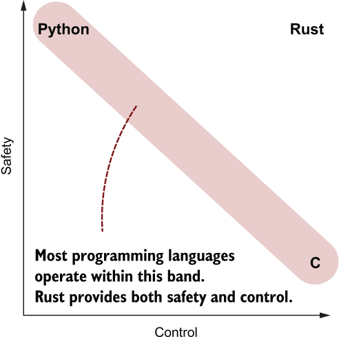
图源：https://livebook.manning.com/book/rust-in-action/chapter-1/121
安全
-
类型系统
- 编译器检查，暴露隐含错误
-
编译器获取更多信息，利于优化
-
增强可读性，代码表达性强
-
所有权系统：每个被分配的内存都有一个独占其所有权的指针
-
借用和生命周期：每个变量都有其生命周期，借用可通过标记生命周期供编译检查
如何实现内存安全？
- 人工管理：C/C++，难处理，易出错
- 智能指针：C++/Objc/Swift，性能损失，循环引用问题
- 垃圾回收：Java，大量内存消耗，不必要的堆内存分配
- 所有权模型（Ownership）：Rust，学习曲线&理解成本
如何实现并发安全？
-
单线程
：JavaScript
- 最安全的并发方式，但无法利用多核性能
-
全局解释器锁（GIL）
：Python/Ruby
- 全局锁，以性能换安全
- 锁粒度过大
-
Actor Model
：Erlang/Swift(> 5.5)
- 通过消息同步（actor -> actor)
- 额外内存拷贝和堆内存分配
-
Communicating Sequential Process (CSP)
：Golang
- 通过消息同步（coroutine -> channel -> coroutine)
- 额外内存拷贝和堆内存分配
-
所有权模型 + 类型系统
：Rust
- 通过类型安全保证
- 无性能损失，且可以与其他方式兼容，如
std::sync::mpsc
零成本抽象（性能）
// Rust
fn main() {
6.times(|_| println!("6"));
}
pub trait Times where Self: Sized {
fn times<F: FnMut(Self)>(&self, closure: F);
}
macro_rules! impl_times {
($ptype:ty) => {
impl Times for $ptype {
fn times<F: FnMut($ptype)>(&self, mut closure: F) {
for i in 0..*self {
closure(i)
}
}
}
}
}
impl_times!(i8);
impl_times!(u8);
impl_times!(i16);
impl_times!(u16);
impl_times!(i32);
impl_times!(u32);
impl_times!(i64);
impl_times!(u64);
impl_times!(usize);
- 不存在运行时性能开销，编译时完成
- 语言特性基石：泛型和
trait
性能对比
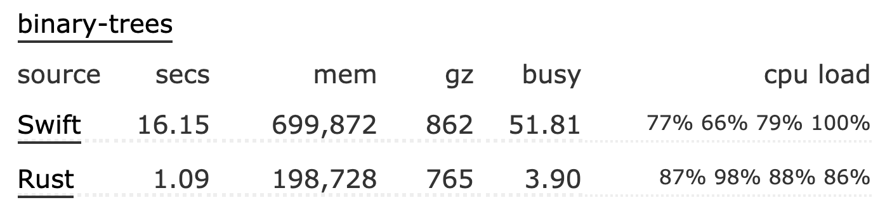
来源：Swift vs Rust - Which programs are fastest? | Computer Language Benchmarks Game
实用性
-
友好的 FFI 支持，可以很好利用已有 C/C++ 等生态
-
包管理器 Cargo 及其一致的工作流
-
强大智能的编译器错误提示机制
工具链
-
Rustup
: 工具链安装与版本管理
- rustc - Rust 编译器
- cargo - Rust 构建与包管理工具
- 两个关键文件：
Cargo.toml和Cargo.lock cargo build—— 编译cargo run—— 运行cargo test—— 测试cargo tree—— 解析依赖树- 更多：The Cargo Book
- 两个关键文件：
- rustdoc - Rust 文档工具
- rust-(lldb|gdb)
- libcore/libstd
-
常用命令
rustup install stablerustup default stablerustup doc [--std]rustup override set stablerustup target listrustup target add armv7-apple-ios- 添加交叉编译的目标支持
-
添加其他辅助工具
rustup component add rustfmt- Rust 代码自动格式化rustup component add clippy- Rust 代码检查与优化
丰富的文档
- 官方指南
- Rust 程序设计语言
- Rustlings - Rust 练习集
- 通过示例学 Rust
- 核心文档
- 标准库 - Rust 标准库 API 手册
- 版本指南
- Cargo 手册 - Rust 包管理器与构建系统
- Rustdoc 手册
- 编译错误索引表 - 深入解释可能遇到的编译错误
- 进阶文档
- Rust 参考手册 - 深入语言设计原理与实现细节
- Rust 黑魔法手册 - 如何更灵活地应用「不安全」的 Rust
- 未稳定特性手册 - 了解通过特性开关开启的语言特性
- 除此以外，所有的三方库都有一致的发布平台和文档中心：
版本兼容性
- 基于版次（Edition）的引入，稳定版 Rust 将始终向后兼容。—— No Rust 2.0
- 与此同时，
cargo fix --edition支持快速迁移
- 与此同时，
跨平台特性
Rust 是对标 C/C++ 的系统级编程语言，理论上可以应用到各个领域。就移动端应用领域而言，目前跨平台的编程语言以 C++ 为主，例如较为主流的 Facebook 的跨平台布局框架 Yoga，腾讯微信的跨平台网络库 mars。而 Rust 是一门对 FFI 良好支持的系统级语言，既能够和 Swift/Kotlin 等平台支持语言一样有良好的抽象和表达性，又能够达到 C/C++ 的性能的同时，还可以在编译期保证安全。因此，如果团队合适，又有跨平台的开发需求，那么 Rust 会是个不错的可选项。
较为流行与成熟的跨平台开源项目
- GitHub - mozilla/application-services: Firefox Application Services
- Firefox 的应用服务层，供 Android/iOS/Desktop 各端使用
- GitHub - signalapp/libsignal-client
- Signal 应用跨平台层，供 Android/iOS/Desktop 各端使用
Rust 的工作流程与社区生态建设
- RFC：Rust 中的每个重要决定都是从征求意见稿（RFC）开始的。 任何人都可以参与提案的讨论，权衡利弊以便达成共识。 对每个语言特性，社区都集思广益、深思熟虑，保证 Rust 高质量迭代。
- 通过 RFC 流程机制，制定年度路线图：确保研发流程的专注
团队构成与分工：
| 核心团队 | 关注项目的整体及跨领域方向，管理子工作组。 |
|---|---|
| 社区团队 | 协调并支持活动，运营 RustBridge 项目以及开展调查研究。 |
| 编译器团队 | 编译器内部结构和优化 |
| Crates.io 团队 | 管理 crates.io （社区三方库）的运维、开发和相关政策。 |
| 开发工具团队 | Rust 开发者工具 |
| 基础架构团队 | Rust 项目自身所需的各种基础设施：持续集成、版本管理、机器人和性能指标。 |
| 语言团队 | 设计新的语言特性 |
| 库团队 | Rust 标准库、rust-lang 包、代码约定以及生态的支持。 |
| 审查团队 | 帮助维护行为准则 |
| 发布团队 | 跟踪回归测试，稳定化并发布 Rust。 |
- 团队中的每个成员都可以通过 GitHub 找到他们
- 「跨团队协作欢乐时光」会议：类似字节的技术双月会
生产环境采用 Rust 的用户和产品
- Android - Android Rust Introduction
- Atlassian - Why we chose Rust as our programming language
- Coursera - Rust & Docker in production @ Coursera
- Dropbox - Rewriting the heart of our sync engine
- Figma - How Mozilla’s Rust dramatically improved our server-side performance
- Fuchsia OS - Fuchisia Rust Introduction
- Sourcegraph - Syntect Server
- Lark/飞书 - Rust 跨平台客户端开发在字节跳动的实践-InfoQ
- npm, Inc - Community makes Rust an easy choice for npm
- ......
Rust 核心语言特性
所有权&借用规则
Rust 内存管理的基础模型
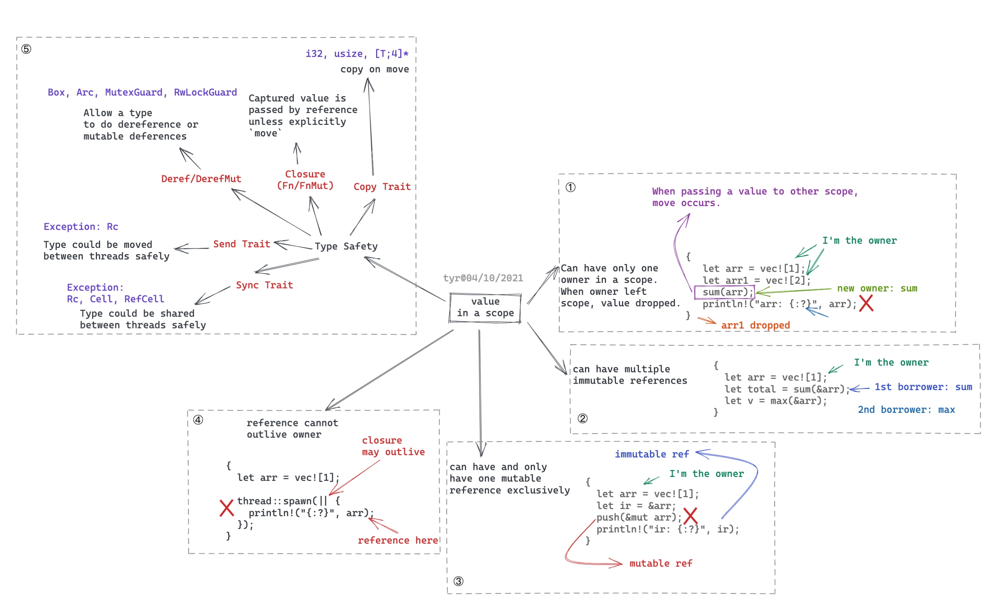
图源：https://tyrchen.github.io/rust-training/rust-training-all-in-one-cn.html#39
和垃圾回收、自动引用计数类似，只是一种内存管理和控制的方式：
- 给了内存安全+并发安全在编译时检查空间
- 付出了编码时更多的考虑（即编译器更多限制）
所有权规则（Ownership）
- 一个值只有一个所有者（owner）
- 所有权（ownership）可以传递（move）给函数和其他变量
- 所有者负责从内存中删除数据
- 所有者能够对数据进行任何操作并可以对其进行修改
代码示例
#[derive(Debug)]
struct Dot {
id: String,
x: i32,
y: i32
}
fn main() {
let dot = Dot { id: "dot_1".to_string(), x: 1, y: 2 };
pacman(dot);
// 若尝试再次调用，则报错，见下图
// pacman(dot);
}
fn pacman(dot: Dot) {
println!("Eating {:?}", dot);
}
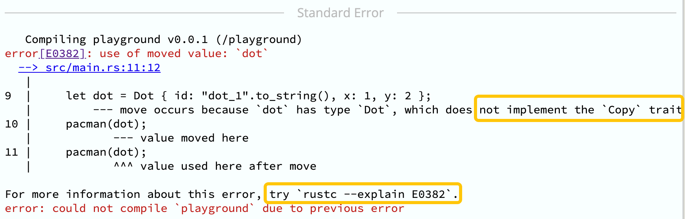
- 编译错误索引：[E0382]
内存生命周期示意
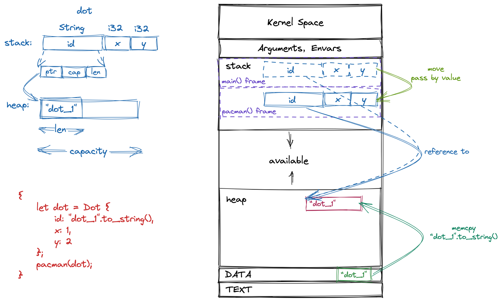
- 当
pacman函数 return，dot对象（如同局部变量一样）将随着整个调用栈帧回收释放(drop)
如何处理所有权被转移的情况（[E0382]）
#[derive(Debug, Clone)]
struct Dot {
id: String,
x: i32,
y: i32
}
fn main() {
let dot = Dot { id: "dot_1".to_string(), x: 1, y: 2 };
pacman(dot.clone());
// 再次调用，编译通过 ✅
pacman(dot);
}
fn pacman(dot: Dot) {
println!("Eating {:?}", dot);
}
-
对数据类型实现
Copytrait，表明该类型可以简单通过位复制创造副本- 实现了
Copytrait 的数据类型，将默认通过「值拷贝」语义进行参数传递
- 实现了
#[derive(Debug, Clone, Copy)]
struct Dot {
id: String,
x: i32,
y: i32
}
fn main() {
let dot = Dot { id: "dot_1".to_string(), x: 1, y: 2 };
pacman(dot); // 实现了 Copy trait，默认通过「值拷贝」传递
// 再次调用，编译通过 ✅
pacman(dot);
}
fn pacman(dot: Dot) {
println!("Eating {:?}", dot);
}
借用（Borrowing）
&：借用操作符，与引用的区别，在于「借用」受一定规则约束
-
不可变借用(
&)- 可多次借用，不可对数据进行修改
- 引用将始终有效，不会为 null 或野指针（即不会超过数据的生命周期）
- 借用的有效期间，确保引用的数据不会发生突变
[代码示例](https://play.rust-lang.org/?version=stable&edition=2018&code=%23[derive(Debug)] struct Point { x%3A i32%2C y%3A i32 } fn main() { let mut p %3D Point { x%3A 1%2C y%3A 2 }%3B inspect(%26p)%3B p.x %3D 2%3B inspect(%26p)%3B } fn inspect(p%3A %26Point) { println!("{%3A%3F}"%2C p)%3B })：
#[derive(Debug)]
struct Point {
x: i32,
y: i32
}
fn main() {
let mut p = Point { x: 1, y: 2 };
inspect(&p);
p.x = 2;
inspect(&p);
}
fn inspect(p: &Point) {
println!("{:?}", p);
}
代码示例：
#[derive(Debug)]
struct Point {
x: i32,
y: i32
}
fn main() {
let mut point = Point { x: 1, y: 2 };
let re = &point; // -\
point.x = 2; // |
inspect(re); // -/
}
fn inspect(p: &Point) {
println!("{:?}", p);
}

-
编译错误索引：[E0506]
-
可变借用（
&mut）- 仅支持一次可变借用，可对数据进行修改
fn main() {
let mut p = Point { x: 1, y: 2 };
inspect(&p);
move_point(&mut p, 3, 3);
inspect(&p);
}
fn move_point(
p: &mut Point,
x: i32, y: i32
) {
p.x = x;
p.y = y;
}
-
借用规则
- 多次不可变借用
- 仅单个可变借用
- 以上两者互斥，即无法共享可变性
- 借用的生命周期无法超过值本身的生命周期
生命周期
生命周期是个心智负担较重的概念，但好在大多数时候编译器，都能自动识别生命周期，不需要额外标注。可先仅作了解，后续再深入。
- 描述标注借用的值在内存中存活的时间范围，即变量的有效范围
- 主要作用是避免指针失效/悬垂引用
- 仅仅是描述和标注，以便编译器做安全检查，不会强制改变固有的生命周期逻辑
- 语法上，与范型相似
静态与动态生命周期
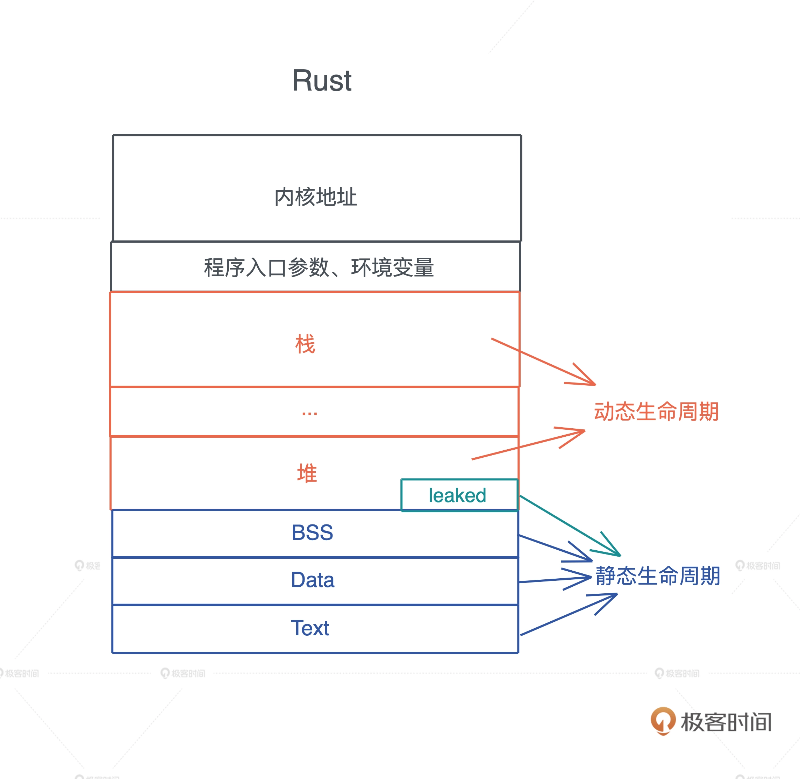
- 分配在堆和栈上的内存有其各自的作用域，生命周期是动态的。
- 全局变量、静态变量、字符串字面量、代码等内容，在编译时，会被编译到可执行文件中，加载入内存。生命周期和进程的生命周期一致，生命周期是静态的。
- 函数指针的生命周期也是静态的，因为函数在 Text 段中，只要进程活着，其内存一直存在。
代码示例
fn main() {
let s1 = String::from("Lindsey");
let s2 = String::from("Rosie");
let result = max(&s1, &s2);
println!("bigger one: {}", result);
}
fn max(s1: & str, s2: & str) -> &str {
if s1 > s2 {
s1
} else {
s2
}
}
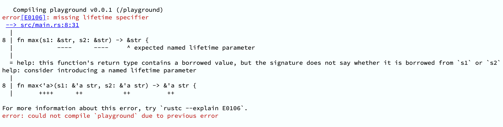
- 编译错误索引： [E0106]: missing lifetime specifier
根据编译器报错引导，添加生命周期标注
fn max<'a>(s1: &'a str, s2: &'a str) -> &'a str
Rust 实战（Live Coding）
rusty-todo-cli：代办清单 CLI 工具
- 创建事项：
add "Rust sharing for genius bytedancers" - 查看事项列表：
list - 完成事项:
done [index] - 持久化：
- 通过 JSON 文件保存
- 默认路径：用户目录，可选文件路径指定
cargo new rusty-todo-cli
[package]
name = "rusty-todo-cli"
version = "0.1.0"
edition = "2021"
# See more keys and their definitions at https://doc.rust-lang.org/cargo/reference/manifest.html
[dependencies]
anyhow = "1.0" # 错误处理
structopt = "0.3" # 命令定义
serde = { version = "1.0", features = ["derive"] } # 序列化/反序列化
serde_json = "1.0" # JSON 解析
chrono = { version = "0.4", features = ["serde"] } # 时间解析
home = "0.5" # 默认存储目录
Doc: structopt - Rust
use std::path::PathBuf;
pub enum Action {
List,
Add { text: String },
Done { index: usize },
}
pub struct CommandLineOptions {
action: Action,
json_file_path: Option<PathBuf>,
}
- cli.rs
use std::path::PathBuf;
use structopt::StructOpt;
#[derive(Debug, StructOpt)]
pub enum Action {
List,
Add {
#[structopt()]
text: String,
},
Done {
#[structopt()]
index: usize,
},
}
#[derive(Debug, StructOpt)]
#[structopt(name = "rusty-todo", about = "A command line todo app")]
pub struct CommandLineOptions {
#[structopt(subcommand)]
action: Action,
#[structopt(parse(from_os_str), short = "p", long = "path")]
json_file_path: Option<PathBuf>,
}
- main.rs
mod cli;
use cli::*;
use structopt::StructOpt;
fn main() {
let CommandLineOptions {
action,
json_file_path,
} = CommandLineOptions::from_args();
println!("JSON file path: {:?}", json_file_path);
match action {
Action::List => println!("List all"),
Action::Add { text } => println!("Add: {:?}", text),
Action::Done { index } => println!("Done: {:?}", index),
}
}
运行
cargo run -- add "Rust sharing for genius bytedancers"
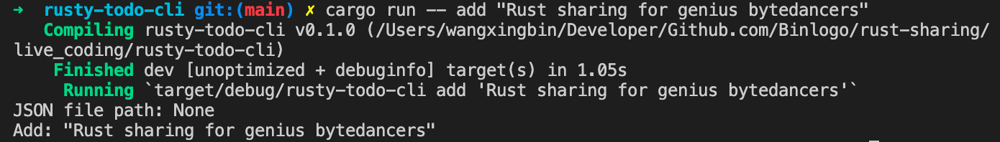
use chrono::{DateTime, Utc};
pub struct Task {
pub text: String,
pub created_at: DateTime<Utc>,
}
use chrono::{serde::ts_seconds, DateTime, Utc};
use serde::{Deserialize, Serialize};
#[derive(Debug, Deserialize, Serialize)]
pub struct Task {
pub text: String,
#[serde(with = "ts_seconds")]
pub created_at: DateTime<Utc>,
}
impl Task {
pub fn new(text: String) -> Self {
Self {
text,
created_at: Utc::now(),
}
}
}
-
添加任务
- task.rs
pub fn add_task(task: Task, json_file_path: PathBuf) -> Result<()> {
let file = OpenOptions::new()
.read(true)
.write(true)
.create(true)
.open(json_file_path)?;
let mut tasks = parse_tasks(&file)?;
tasks.push(task);
serde_json::to_writer(&file, &tasks)?;
Ok(())
}
fn parse_tasks(file: &std::fs::File) -> Result<Vec<Task>> {
let reader = BufReader::new(file);
let tasks = serde_json::from_reader(reader)?;
Ok(tasks)
}
- main.rs
mod cli;
mod tasks;
use anyhow::{anyhow, Result};
use cli::*;
use std::path::PathBuf;
use structopt::StructOpt;
use tasks::*;
fn main() -> Result<()> {
let CommandLineOptions {
action,
json_file_path,
} = CommandLineOptions::from_args();
let json_file_path = json_file_path
.or_else(default_json_file_path)
.ok_or(anyhow!("文件路径查找失败"))?;
match action {
Action::List => println!("List all"),
Action::Add { text } => add_task(Task::new(text), json_file_path)?,
Action::Done { index } => println!("Done: {:?}", index),
}
Ok(())
}
fn default_json_file_path() -> Option<PathBuf> {
home::home_dir().map(|mut path| {
path.push(".rusty-todo.json");
path
})
}
运行
cargo run -- add "Rust sharing for genius bytedancers"
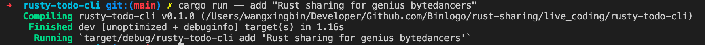
默认用户目录下：
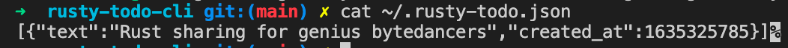
🎉🎉🎉 添加任务成功
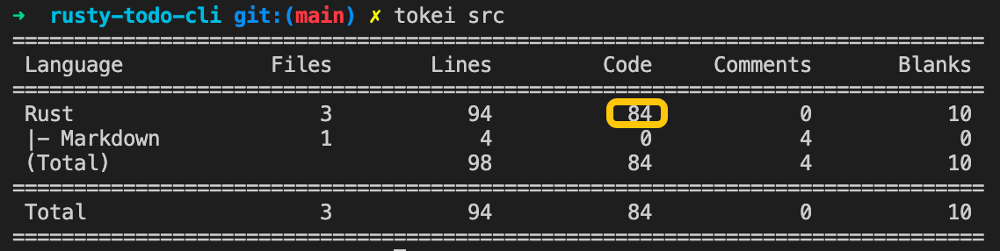
-
查看任务
- tasks.rs
impl Display for Task {
fn fmt(&self, f: &mut std::fmt::Formatter<'_>) -> std::fmt::Result {
write!(f, "{:<50} [{}]", self.text, self.created_at)
}
}
pub fn list_tasks(json_file_path: PathBuf) -> Result<()> {
let file = OpenOptions::new().read(true).open(json_file_path)?;
let tasks = parse_tasks(&file)?;
if tasks.is_empty() {
println!("待办事项为空，好好休息下吧～🎉")
} else {
for (index, task) in tasks.into_iter().enumerate() {
println!("{}: {}", index, task);
}
}
Ok(())
}
- main.rs
match action {
Action::List => list_tasks(json_file_path)?,
Action::Add { text } => add_task(Task::new(text), json_file_path)?,
Action::Done { index } => println!("Done: {:?}", index),
}
运行
cargo run -- list
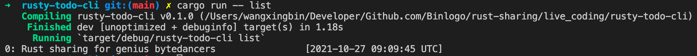
略：动手尝试下吧！
附：查阅此次 Live Coding 代码
参考
-
陈天 · Rust 编程第一课 （陈天的课程质量非常高，深入浅出，认真推荐🌟）
欢迎使用我的二维码，我将获得半杯咖啡 😝